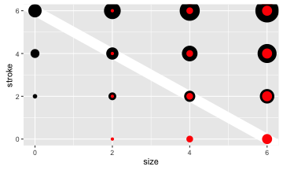

Topics
- why RStudio?
- Creating presentations with R.
- why using Shiny?
- Advantages of using Shiny.
- examples.
Assa Yeroslaviz
Dept. Computatational Biology
RStudio offers multiple advantages compare to the normal terminal / command line
user friendly and easy-to-use IDE

RStudio offers multiple advantages compare to the normal terminal / command line
source codes, STDOUT, images and results are in the same windows.

RStudio offers multiple advantages compare to the normal terminal / command line
RStudio offers multiple advantages compare to the normal terminal / command line

-it has several layouts and advanced options.
header
---
title: "Introducing Shiny and RStudio"
author: "Assa Yeroslaviz - Dept. Computational Biology"
output:
ioslides_presentation:
widescreen: true
transition: faster
---
Slide with Bullets
Slide with R Output
summary(cars)
## speed dist
## Min. : 4.0 Min. : 2.00
## 1st Qu.:12.0 1st Qu.: 26.00
## Median :15.0 Median : 36.00
## Mean :15.4 Mean : 42.98
## 3rd Qu.:19.0 3rd Qu.: 56.00
## Max. :25.0 Max. :120.00
Slide with Plot
library(ggplot2)
sizes <- expand.grid(size = (0:3) * 2, stroke = (0:3) * 2)
ggplot(sizes, aes(size, stroke, size = size, stroke = stroke)) +
geom_abline(slope = -1, intercept = 6, colour = "white", size = 6) +
geom_point(shape = 21, fill = "red") +
scale_size_identity()

advanced possibilities for interactive presentations
for more information see slidify (http://slidify.org/)
similar functionality as Latex
Slidify works in R, so you need to download that if you haven't yet.install.packages("devtools")
install_github('slidify', 'ramnathv')
install_github('slidifyLibraries', 'ramnathv')
A framework is a collection of stylesheets, javascripts and layouts that control the style and appearance of a slide deck.
---
title: Frameworks
framework: revealjs
mode: selfcontained
---
## Slide 1
Some content
---
## Slide 2
Some content
slidify allows the user to directly publish or share the results as well as the analysis method via different repositories. This is easily done with e.g.
library(slidify)
publish_github("myDeck", username="frymor")
## Publishing deck to frymor/myDeck
## You can now view your slide deck at http://frymor.github.com/myDeck
This text should span the entire slide.
This text should float to the left.
This text should float to the right.
slidify